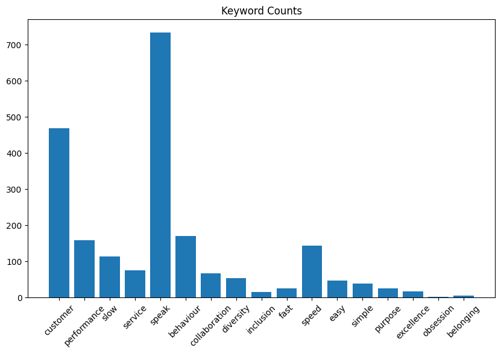
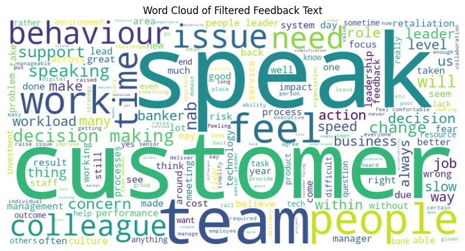
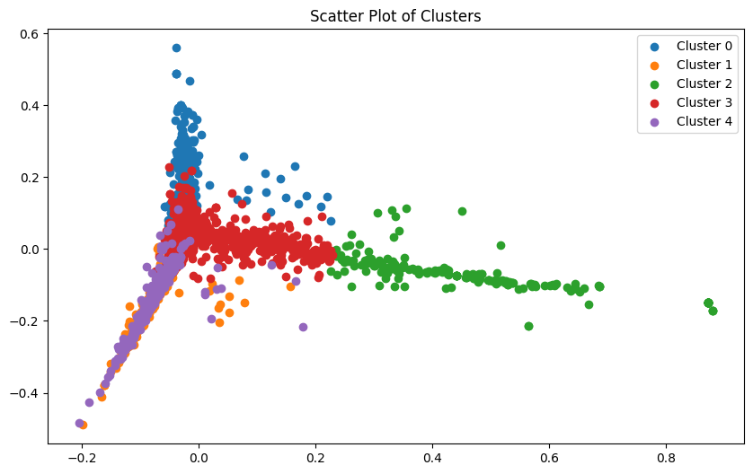
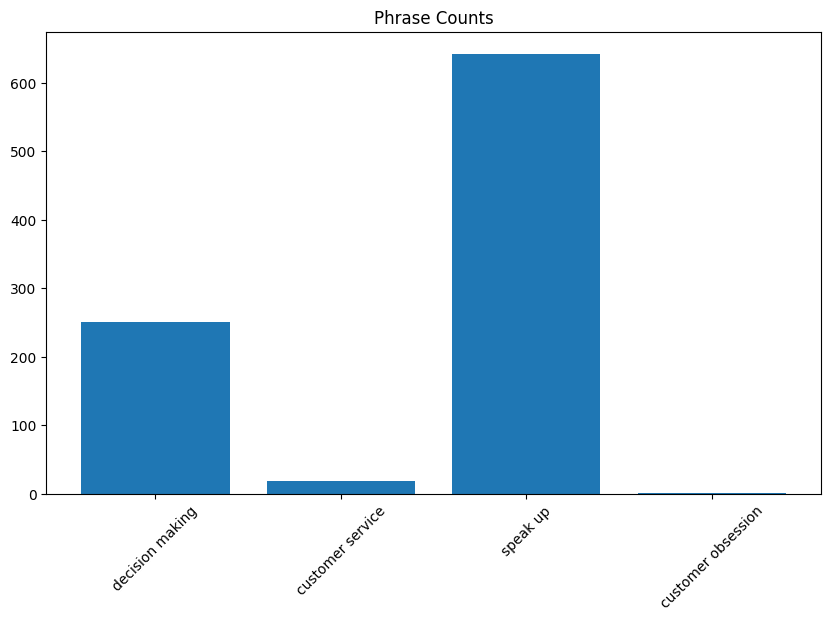
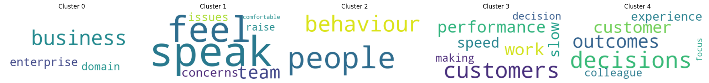

Welcome to an exploration of advanced text analysis techniques. In this article, we delve into the sophisticated methodologies used to extract valuable insights from feedback data. If you are curious about how machines process and interpret textual information, this guide will provide a clear and professional overview. Let's embark on this journey to uncover the mechanisms behind our analysis.
These methodologies, including TF-IDF (Term Frequency-Inverse Document Frequency) and k-means clustering, are widely used across various industries. In the tech sector, they help in enhancing search engine algorithms and improving recommendation systems. In marketing, they enable sentiment analysis of customer feedback to gauge public perception of products and services. In healthcare, these techniques can analyse patient feedback to improve service delivery and patient satisfaction. Financial services utilise these methods to detect fraudulent activities by analysing transaction descriptions and customer communications.
By integrating these powerful tools, we can efficiently process large volumes of text data, uncovering patterns and insights that inform strategic decisions and drive continuous improvement.
Our objective was to rapidly identify key themes from feedback data to assist the Culture team in developing new customer and colleague behaviours. Given the tight deadline of one week, we had limited time to create a highly robust solution. Our initial goal was to develop a comprehensive NLP solution, but we encountered significant challenges:
Despite these challenges, we focused on delivering actionable insights within the given timeframe. With more time, we could enhance our solution by incorporating deeper domain-specific training for the NLP model and refining sentiment analysis to better capture the nuances of business language. These improvements would allow for even more precise and meaningful analysis, driving better-informed decisions and strategies.
Ultimately, these insights should be viewed as a starting point for further investigation and discussion, rather than definitive conclusions. We recommend using this analysis in conjunction with other qualitative and quantitative data sources for a more comprehensive understanding.
When analysing a collection of documents - in this scenario 'Colleague Feedback', identifying the most significant terms is crucial. This is where TF-IDF (Term Frequency-Inverse Document Frequency) comes into play. Despite its complex name, the concept is straightforward.
Term Frequency (TF): This metric measures the frequency of a word within a document. For example, counting how often "customer" appears in a report.
Inverse Document Frequency (IDF): This component assesses the uniqueness of a word across all documents. If "customer" is ubiquitous across all reports, its uniqueness diminishes. The formula is as follows:
\[ \text{IDF}(t) = \log\left(\frac{N}{\text{DF}(t)}\right) \]
Where \(N\) is the total number of documents and \(\text{DF}(t)\) is the number of documents containing the term.
TF-IDF Weight: By combining TF and IDF, we obtain a weight that signifies the importance of a word in a specific document relative to the entire collection. Higher scores indicate more significant terms.
Stemming and lemmatisation are techniques used to reduce words to their base forms, simplifying the analysis process. Consider words like "organise," "organises," and "organising." These methods help in grouping them together for more effective analysis.
Stemming: This technique truncates words to their root forms. For instance, "running" becomes "run."
Lemmatisation: This method is more refined, using vocabulary and morphological analysis to convert words to their dictionary form. Thus, "running" becomes "run," and "better" becomes "good."
We started by loading our datasets, which included feedback comments and verbatim responses. After combining them into a single dataset, we pre-processed the text to ensure it was in a suitable format. Stemming and lemmatisation were then applied to both our keywords and the text data.
To enhance the accuracy of our analysis, we filtered the data to retain only relevant comments. We employed fuzzy matching to verify if any keyword or phrase from our predefined list appeared in the text.
Visualising the frequency of keywords and phrases allowed us to identify which terms were most prominent. Bar charts and word clouds provided a clear view of term distribution within our data.


We then vectorised the text using TF-IDF and applied k-means clustering to group similar comments. Selecting five clusters enabled us to categorise the feedback effectively. To visualise these clusters, we used PCA for dimensionality reduction and created scatter plots.

For each cluster, we identified the top terms and representative texts to understand the common themes. This step was essential for grasping the essence of each cluster.

A quick summarisation, on what some of the clusters, lean to;

We added a new column to our dataset to indicate related keywords or phrases for each comment. Finally, we saved the processed data, including clusters and related terms, to a CSV file for further analysis.
In conclusion, we have explored the application of TF-IDF, stemming, lemmatisation, and clustering to derive meaningful patterns from feedback data. This process not only organises vast amounts of text but also provides valuable insights that can drive decision-making.
Automated Keyword Extraction: We utilised TF-IDF to automatically extract and weight important keywords and phrases from the survey responses. This enabled us to identify terms that are particularly significant within the context of our dataset.
High-Dimensional Document Clustering: Using k-means clustering, a powerful machine learning algorithm, we grouped the survey responses into distinct clusters based on content similarity. This clustering reveals underlying themes and patterns in the feedback, providing a clear, organised view of the data.
Advanced Analytics: By employing TF-IDF and k-means clustering, we applied sophisticated algorithms that surpass simple keyword searches. These methods ensure that the most relevant and impactful phrases are highlighted, offering a deeper understanding of the feedback.
High-Dimensional Space: Each document is represented as a vector in a high-dimensional space, with each dimension corresponding to a term in our corpus. The k-means algorithm navigates this complex space to identify clusters of closely related documents. This involves calculating the Euclidean distance between document vectors in this multi-dimensional space to determine their similarity.
To put this into perspective, imagine attempting this analysis manually in Excel:
By automating these tasks using NLP and machine learning, we have significantly reduced the time and effort required to analyse the survey data. What would take a single person days or even weeks to accomplish manually, we can now achieve in a fraction of the time with greater accuracy and consistency. This enables us to make data-driven decisions swiftly, ensuring responsiveness to our colleagues' feedback and continuous improvement of our workplace environment.
Feel free to dive into the provided script, adjust it, and discover what insights you can uncover from your own data. Stay curious and continue exploring the wonders of data science!
Have a cheeky look below! Yeah it's very detailed but there may be some who like to do a bit of a teardown. Enjoy.
As a final note, please keep in mind that there is no sensitive data involved in this python script, as it handles the data agnostically. Furthermore, we have taken steps to ensure there are no deaggregated or sensitive datapoints in this article. Many thanks